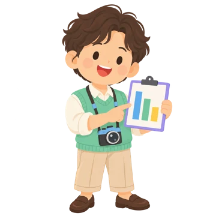
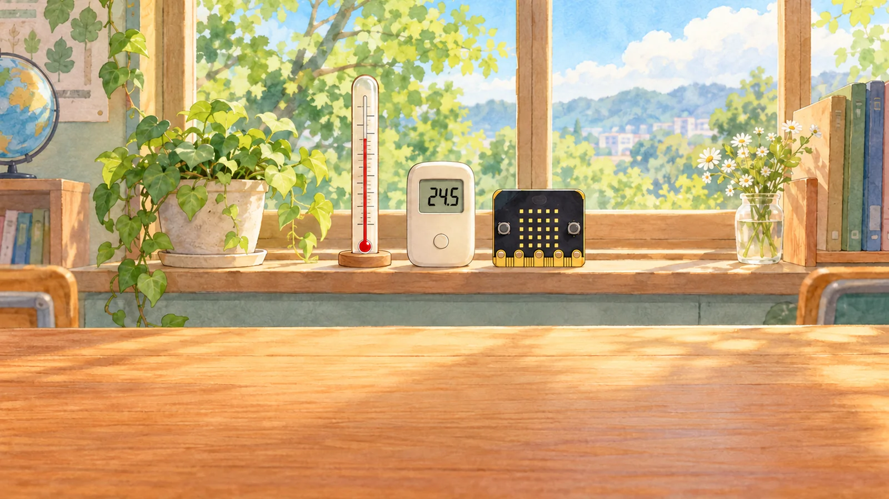
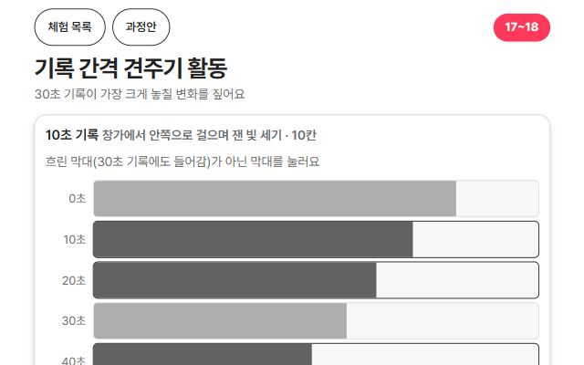
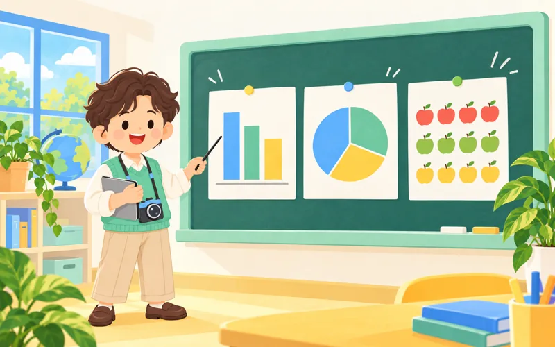
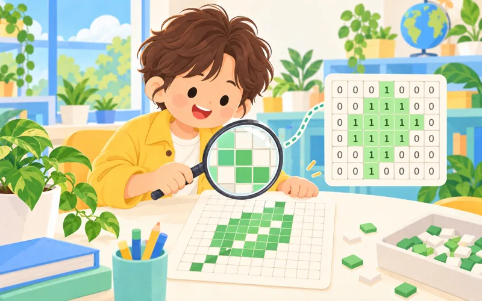
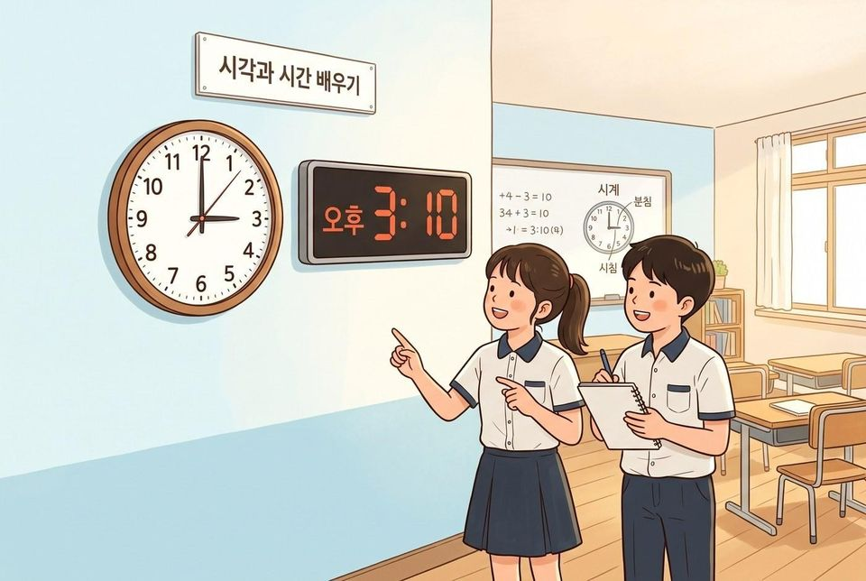
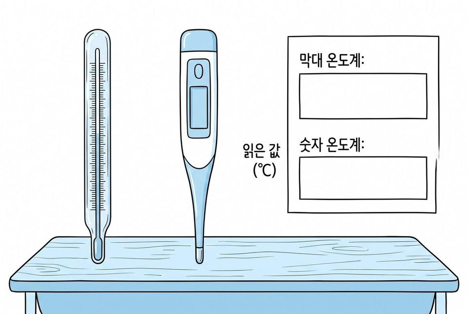
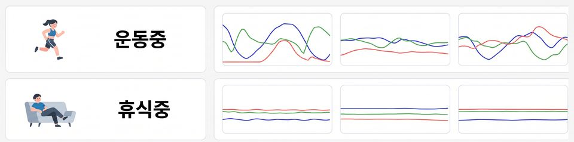

6학년 17~18차시 · 센서 값을 숫자로 끊어 적기
온도계와 마이크로비트 센서로 아날로그 값을 디지털 값으로 적고 데이터 유형 나누기
이어지는 값을 끊어 적은 값으로 나타내고, 숫자로 바꾸어요.

체험 활동 열기데이터쌤과 5~10분 · 기록 간격 견주기 활동→수업 흐름
| 단계 | 시간 | 핵심 활동 |
|---|---|---|
| 도입17차시 | 8분 |
|
| 전개17차시 | 32분 |
|
| 전개18차시 | 33분 |
|
| 정리18차시 | 7분 |
|
학습 문제 아날로그 값과 디지털 값의 의미를 알고, 데이터의 종류를 구분해 봅시다.
준비물
연필막대 온도계와 숫자 온도계마이크로비트 V2USB 케이블배터리 팩데이터 카드 8장
평가
온도계와 마이크로비트 센서를 활용해 측정하여 아날로그 값과 디지털 값으로 나타내고, 기록 간격에 따른 차이를 알고 다양한 데이터 유형을 설명할 수 있는가?
평가 기준 자세히
인공지능 소양 · 데이터를 나타내는 방식의 이해 — 온도계와 마이크로비트 센서를 활용해 측정하여 아날로그 값과 디지털 값으로 나타내고, 기록 간격에 따른 차이를 알고 다양한 데이터 유형을 설명할 수 있는가?
| 수준 | 평가 기준 |
|---|---|
| 매우 잘함 | 같은 온도를 두 방식으로 적고, 아날로그는 끊기지 않고 이어지는 값이고 디지털은 정한 단위로 끊어 적은 값이라고 자기 기록을 들어 설명한다. 10초·30초 기록에서 넓은 간격이 놓친 변화를 찾고, 단위나 간격이 좁을수록 원래 변화에 가까워진다고 설명한다. 데이터 카드를 네 유형으로 나누고, 그림·소리 카드가 어떤 숫자로 바뀌는지 예를 들어 쓴다. |
| 잘함 | 같은 온도를 두 방식으로 적고, 차이를 '이어진다/끊어진다'로 설명한다. 넓은 간격에서 놓친 변화를 한 가지 이상 찾는다. 데이터 카드를 네 유형으로 바르게 나누고, 카드 한 장이 어떤 숫자로 바뀌는지 쓴다. |
| 보통 | 같은 온도를 두 방식으로 적지만, 차이를 '다르다'는 말로만 설명한다. 두 간격의 기록을 나란히 그리지만, 놓친 변화는 교사가 물은 뒤에야 찾는다. 데이터 카드는 대부분 바르게 나누지만, 숫자로 바뀌는 방법은 쓰지 못한다. |
| 노력요함 | 교사가 기록 칸과 간격을 가리키고 예를 보여 주면 두 방식으로 적을 수 있으나, 두 방식의 차이와 간격에 따른 차이를 설명하기 어렵다. 데이터 카드는 일부만 나눈다. |
| 미관찰 | 결석이나 미제출로 확인하지 못한 경우. 낮은 성취로 적지 않고 따로 기록한 뒤 보충 확인 시점을 정한다. |
평가 방법 서술형 평가 · 구술 평가 · 관찰 평가
강의교안 미션 해결단 · 수업 화면에 띄워요

B23 강의교안교수학습 과정안·활동지·체험 활동을 미션 해결단 이야기로 이어요. 넘기며 예측하고 확인해요.열기체험 활동

기록 간격 견주기 활동30초 기록이 가장 크게 놓칠 변화를 짚어요5~10분누르기만열기연계 활동 이 차시와 이어서 해 보는 AI 체험

우리 반 그래프 실험실반 데이터를 넣고, 질문에 가장 빨리 답하는 그래프를 찾아요. 한 칸 잘못 넣거나 한 줄 빼면 그래프가 어떻게 바뀌는지도 봐요.모델 없음열기
0과 1 그림 탐정칸 그림을 0과 1로 바꾸고 확인 칸을 붙여 보내요. 보내는 길에 몰래 바뀐 한 칸을 찾아내요.모델 없음열기연동 도구
과정안에 나온 도구예요. 수업 전에 학교망에서 열리는지 확인해 주세요.
MakeCode (micro:bit) ↗마이크로비트 블록 코딩·시뮬레이터·무선(라디오)계정: 필요 없음라디오 블록 설명 ↗MakeCode (micro:bit) 안내마이크로비트 V2 ↗LED·버튼·가속도·소리 센서, 무선 통신계정: 필요 없음micro:bit CreateAI ↗움직임 데이터로 동작 모델 학습·시험, 움직임 그래프계정: 필요 없음(크롬·엣지)CreateAI 사용 안내 ↗micro:bit CreateAI 안내
내 수업 링크 걸어 두기
학급 패들렛, 엔트리 작품처럼 이 차시에 쓸 링크를 걸어 둬요. 이 브라우저에만 저장돼요. 학생 이름이 든 주소는 넣지 마세요.
과정안 전문 펼치기 개요·교수학습 활동·그림
개요
| 성취기준 | [6실인공지능04-01] 디지털 데이터와 아날로그 데이터의 특징을 이해하고, 인공지능에 활용할 데이터의 유형을 탐색한다. 연계 성취기준: [6실05-04], [06자율-5] |
|---|---|
| 핵심 역량 | 지식정보처리 역량, 창의적 사고 역량 |
| 지식·이해 | ① 이어지는 아날로그 값과 끊어진 디지털 값의 차이 ② 변하는 상황을 일정 간격마다 숫자로 바꾸는 센서 ③ 데이터의 유형(수·글·이미지·소리) |
| 과정·기능 | ① 데이터 간에 공통점 탐색하기 ② 온도계의 값을 아날로그 값과 디지털 값으로 나타내기 ③ 센서 값을 디지털 값의 숫자로 끊어 기록하기 ④ 디지털 값으로 기록할 때, 아날로그 값과 차이점 설명하기 ⑤ 데이터를 수·글·이미지·소리로 나누기 |
| 가치·태도 | 생활 속의 여러 가지 데이터가 갖는 의미를 파악하는 자세 아날로그 값과 디지털 값의 차이를 구분하려는 자세 |
교수학습 활동
17차시도입8분
동기 유발
- 바늘 시계와 숫자 시계가 시각을 보여 주는 방법 비교하기
- 바늘 시계에서 3시 7분과 3시 8분 사이가 어떻게 나타나는지 살피기
- 과학 선생님의 의뢰: 우리 도우미가 알아듣게 세상을 숫자로 바꾸는 ‘데이터 번역가’ 되기

학습문제 제시
- 아날로그 값과 디지털 값의 의미를 알고, 데이터의 종류를 구분해 봅시다.
자료[도입] 상황 그림
유의점아날로그 값과 디지털 값을 나타내는 방법을 다시 묻는다.
유의점어떻게 표현하는지 살펴보고 시계의 원리를 다 설명하지 않는다.
17차시전개32분
활동1. 온도계 눈금과 숫자 표시 비교하기 (14분)
- 막대 온도계와 숫자 온도계를 같은 자리에 나란히 놓기
- 두 온도계에서 읽은 값을 각각 적기
- 막대 온도계의 빨간 기둥 끝을 그려 넣기
- 읽은 온도를 1도 단위와 0.5도 단위로 끊어 보기
- 막대 온도계의 경우, 눈금 사이에도 온도가 끊기지 않고 이어짐을 확인하기
- 이어지는 값은 아날로그, 단계로 끊은 값은 디지털로 정리하기

활동2. 움직임 그래프를 숫자로 끊어 적기 (18분)
- 손목을 천천히 들었다 내리는 움직임을 손으로 곡선을 그려 나타내기
- 모둠 마이크로비트를 createai.microbit.org에 연결하기
- 흔들고 기울이며 그래프가 바뀌는 모습 살피기
- 그래프는 센서가 보낸 움직임 숫자를 이어 그린 것임을 알기
- 동작 ‘들기’를 하며 그래프가 어떻게 바뀌는지 확인하기

[사진 3] -움직임 그래프를 측정하는 그림
준비물연필, 막대 온도계와 숫자 온도계, 마이크로비트 V2(모둠당 1대), USB 케이블, 배터리 팩
자료[활동1] 온도계 관찰 자리 그림
유의점온도계는 교사가 미리 같은 자리에 두고, 손으로 감싸거나 입김을 불어 값을 바꾸지 않게 한다.
유의점마이크로비트를 흔들 때 손목 밴드나 끈을 감아 떨어뜨리지 않게 한다.
유의점블루투스 연결이 안 되면 교사 화면의 그래프를 함께 보고 옮겨 그린다.
유의점느린 학습자는 다섯 지점이 표시된 도움 카드를 쓰고, 빠른 학습자는 도전 과제를 한다.
18차시전개33분
활동3. 센서 기록표로 기록 간격 바꾸어 보기 (20분)
- MakeCode 기본 코드 살피기: 버튼 A를 누르면 빛 세기 값 보여 주기
- 한 명이 마이크로비트를 들고 창가에서 교실 안쪽으로 천천히 걷기
- 나머지는 10초마다 A를 눌러 나온 값을 기록표에 적기
- 같은 길을 30초마다 적은 기록과 나란히 막대로 그리기
- 간격이 넓을 때 놓친 변화를 찾아 표시하기
- 센서는 끊임없이 변하는 상황을 정해진 간격마다 숫자로 바꾼다는 것 정리하기
- 도전: 온도 센서로 바꾸어 기록해 보기
활동4. 데이터 카드를 유형별로 나누고 숫자 찾기 (13분)
- 데이터 카드 여덟 장 살피기: 숫자(온도, 시간), 그림(오리, 손), 글(쪽지, 단어), 소리(박수, 노래)
- 수·글·이미지·소리 네 묶음으로 카드 나누기
- 카드마다 컴퓨터로 기록을 한다면 어떤 숫자로 바뀌어 저장되는지 생각하여 의견 나누기
- 앞서 배운 그림 숫자표를 떠올려 데이터 카드와 연결해 보기
준비물마이크로비트 V2(모둠당 1대), USB 케이블, 배터리 팩, 데이터 카드 8장(모둠별)
자료MakeCode 기본 코드
유의점수업 전에 MakeCode 블록 이름을 확인하고 기본 코드를 모든 기기에 미리 넣어 둔다.
유의점그림·소리를 숫자로 바꾸는 방법은 앞에서 배운 것을 떠올리며 복습을 한다.
18차시정리7분
배운 내용 정리 (5분)
- 아날로그와 디지털을 값을 나타내는 방식으로 한 문장씩 쓰기
- 기록 간격을 넓혔을 때 놓친 것을 자기 기록에서 하나 들어 쓰기
- 센서 값이 인공지능이 배우는 데이터가 되는 까닭 말하기
다음 차시 예고 (2분)
- 안전 담당 선생님의 다음 의뢰 알기: 우리 반 자료를 나누고 AI에게도 나누게 하기
- 활동지 두 장을 붙여 정리해 제출하기
유의점아날로그 값과 디지털 값을 옛날의 것과 오늘날의 것이라고 정리하지 않도록 한다.